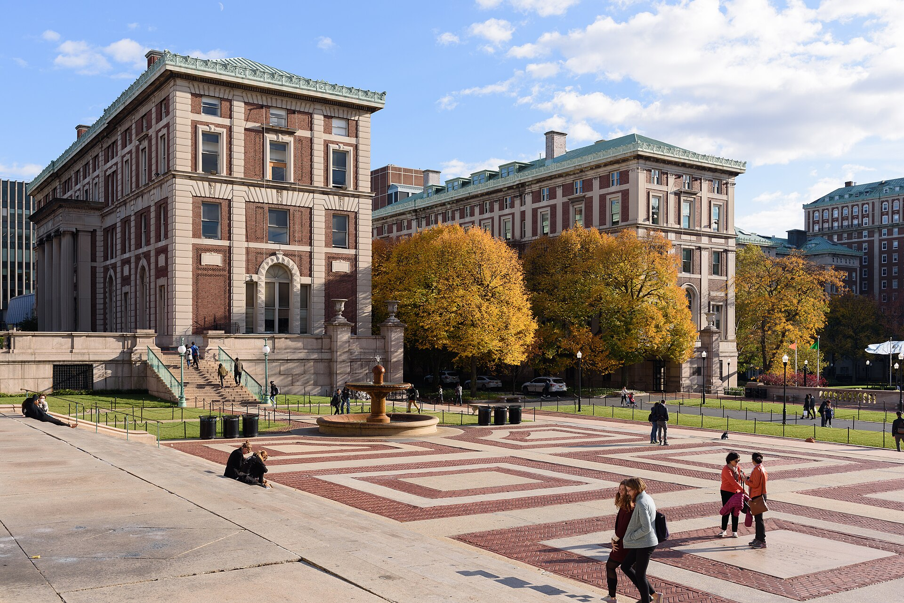

Mahmoud Khalil Files Suit Against Columbia University, Alleging Failure to Protect Students From Doxxing
The complaint was filed in federal court in Manhattan on Sept. 14. It accuses the university of failing to protect students harassed because of their Arab or Muslim background.

On Sept. 14, 2026, Palestinian activist Mahmoud Khalil filed a lawsuit in federal court against Columbia University. The complaint was submitted to federal court in Manhattan on behalf of Khalil, the SIPA Palestine Working Group and its chair, Mohammed Zubairi.
The suit alleges that the university violated federal civil rights law by failing to protect students from threats, the public disclosure of personal information (“doxxing”) and other forms of harassment. According to the complaint, the harassment was carried out because of the students' Arab or Muslim background, or because they advocated for Palestinian rights.
The substance of the suit
The filing states that the university's “deliberate indifference” led to the public disclosure of group members' personal information and to Khalil's arrest by the immigration service.
The suit asks the court for three things: to restore Khalil's access to campus, to reverse the decision suspending the pro-Palestinian student group's activities, and to award damages in an amount to be determined at trial.
The background
Mahmoud Khalil is a Columbia University graduate. He was arrested in March 2025 at his apartment on campus by officers of U.S. Immigration and Customs Enforcement (ICE). His case became one of the most widely discussed instances of measures applied to participants in pro-Palestinian demonstrations.
Khalil was held for 104 days at an immigration detention facility in Louisiana and during that time was unable to attend the birth of his first child. A federal judge in New Jersey later ordered his release.
- Filing date: Sept. 14, 2026
- Court: federal court in Manhattan (New York)
- Plaintiffs: Mahmoud Khalil, SIPA Palestine Working Group, Mohammed Zubairi
- Defendant: Columbia University
- Demands: restoration of campus access, reinstatement of the group's activities, damages
The university's position
Over the past two years, Columbia University has imposed a series of disciplinary measures over campus demonstrations and has negotiated with the federal government over funding. The university is expected to state its official position on the suit in the course of the court proceedings.
The wider context
Since 2023, demonstrations on the subject of Palestine at U.S. universities and the measures taken in response have been at the center of a civil rights debate. Student organizations have demanded investigations into complaints related to both antisemitism and Islamophobia.
According to CAIR, a Muslim civil-rights organization, it received more than 8,500 complaints related to being targeted, harassed or attacked over the past year.
Why it matters for the diaspora
The New York metropolitan area is the center of the largest Uzbek community in the United States: the 2020 census recorded 53,374 people identifying Uzbek ancestry. The legal position of people on student visas or with temporary status — an issue where immigration and freedom of expression intersect — carries direct practical significance for communities from the region.
What “doxxing” is
“Doxxing” is the practice of publicly disclosing a person's name, address, workplace or family details without their consent. It is often used as part of online harassment.
Instances of this practice being used against demonstration participants have been recorded at U.S. universities in recent years. In some cases, the information was displayed on mobile billboards around campus.
This practice occupies a central place in the suit: it alleges that the university failed to protect students from it and took no action when complaints were made.
The legal basis
The complaint rests on federal civil rights law. Because educational institutions in the United States receive federal funding, they take on an obligation not to permit discrimination on the basis of race, national origin and other protected characteristics.
In case law, the concept of “deliberate indifference” is applied where an institution has failed to respond to a known instance of harassment.
The allegations in the complaint are, at this stage, claims that have not been tested by a court; the defendant will state its position in the course of the proceedings.
The history of Khalil's case
Mahmoud Khalil is a graduate of Columbia University's School of International and Public Affairs (SIPA). He was arrested in March 2025 at his apartment on campus by immigration officers.
He was held for 104 days at an immigration detention facility in Louisiana. His first child was born during that period; he was unable to attend the birth.
A federal judge in New Jersey later ordered his release. Khalil said at the time that he had filed a separate lawsuit against the government.
The debate on campuses
Since 2023, demonstrations on the subject of Palestine at U.S. universities and the disciplinary measures taken in response have prompted broad debate.
Student organizations have filed complaints related to both antisemitism and Islamophobia; the Department of Education opened investigations into a number of universities.
Columbia University was among the institutions most frequently named in this process: it negotiated with the government over federal funding and revised its campus conduct rules.
The context for Muslim communities
According to CAIR, a Muslim civil-rights organization, it received more than 8,500 complaints related to being targeted, harassed or attacked over the past year — the highest figure in its history.
The 25th anniversary of the Sept. 11 attacks was marked in the United States that same month. The debate around the ceremony centered on the attendance of New York's first Muslim mayor, Zohran Mamdani.
Practical aspects for the diaspora
The New York metropolitan area is home to the largest community of migrants from Uzbekistan: the 2020 census recorded 53,374 people identifying Uzbek ancestry.
The question of legal status carries practical significance for people on student visas or with temporary status. In June 2026, Uzbekistan's consulate general in New York advised citizens to comply strictly with local law.
Over the course of 2026, the United States carried out several deportation flights to Uzbekistan; 72 citizens were reported returned in March and 26 in May.
What comes next
The course of the proceedings and the final ruling are not yet known. Civil rights cases of this kind typically take several years.
The SIPA Palestine Working Group
The SIPA Palestine Working Group student group and its chair, Mohammed Zubairi, are named as the second plaintiff in the suit. The group operated within the university's School of International and Public Affairs.
The complaint also demands the reversal of the decision suspending the group's activities. A student organization's registered status determines its ability to book space on campus, receive funding and hold events.
Freedom of expression at universities
Private universities in the United States are not bound by First Amendment requirements to the same degree as public institutions, but they set out freedom-of-expression obligations in their own internal rules.
For that reason, disputes of this kind often proceed along two parallel tracks: the institution's compliance with its own rules, and the requirements of federal civil rights law.
The course of the proceedings and the final ruling are not yet known. The allegations in the complaint are claims that have not been tested by a court.